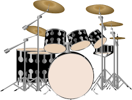

Ok, so we begin with the snare. The snare is a part of the drum that makes the "tap" sound. This is often placed right in front of the seat, for it's used very often. This drum is often coupled with the kick drum, which is, hence the name, the drum with a kick pedal. This drum is responsible for the boom sound in the commonly used "boom boom tap" rhythm.
Now we move to the toms. There are often three: the high, the mid, and the low tom, although some sets have drums that can go even lower. They each make a boom sound effect based on their name (high tom makes a high pitch sound, low tom makes a low pitch), with the pitch for the low one higher than the kick drum.
Next is cymbals. There's the crash, which makes a crash sound, the high hat, which makes different reverberating, higher versions of the crash whether you open or close it, and the strafe. The strafe is a lighter version of the crash, and is often used in the background.
Photo by shimmerscroll on Deviantart